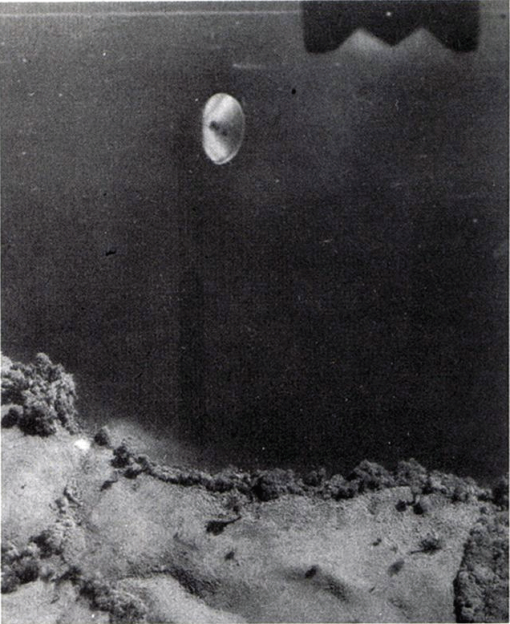
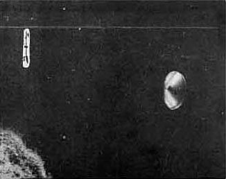
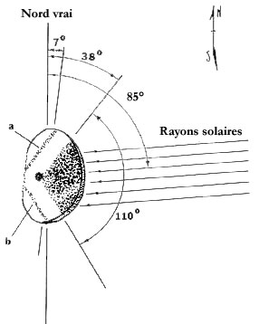
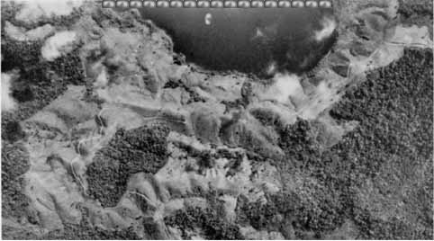

Le , un avion de l'Etat costaricain effectue une mission de cartographie. L'équipage de 4
personnes est constitué de :
Sergio L. V. (spécialiste de la photographie aérienne)
Omar A. (pilote)
Juan B. C. (géographe)
Francisco R. R. (topographe).
Diverses photographies sont prises durant le vol, sans que personne
n'observe quelque chose d'anormal.

La photo prise au Costa Rica (détail)
Au développement, la photographie n° 300 montre l'image étrange d'un
disque. Les photographies n° 299 et n° 301, prises respectivement avant et après, ne montrent rien
de tel. Le disque se trouve à un peu moins de 3,1 miles au nord de la ville d'Arenal et à environ 25 miles au sud de
la frontière avec le Nicaragua, par 10,583° de latitude nord et 84,916° de longitude ouest, dans la province
d'Alajuela, au-dessus d'un petit lac appelé Lago de Cote, mesurant
approximativement 1800 m sur 1600 m, lequel est à environ 640 m au-dessus du niveau de la mer et dans un paysage de
collines douces ou escarpées s'élevant à plusieurs centaines de mètres au-dessus du fond de la vallée. La région est
couverte de forêt dense, avec de large étendues de prairie. Une route de terre, praticable seulement en été, court le
long de la rive Sud. Elle relie la bourgade de Cabanga au nord-est à Aguacate au sud-ouest. En examinant la photo avec
soin, on distigue quelques bâtiments le long de la route et des animaux dans les champs. Le disque se trouve à
quelques 800 m plein nord de la démarcation entre les provinces d'Alajuela et de Guanacaste.
En , Ricardo Vilchez, dirigeant avec son frère Eduardo un groupe privé de recherche à la capitale
San José (Costa
Rica), rencontre Sergio L. V. Ils discutent des circonstances du vol et de la photo, sans formuler de
conclusion sur la nature du phénomène.
En , le professeur Jean-Pierre Bergoeing Docteur en géomorphologie, ayant travaillé à l'Institut de Géographie et d'Aménagement Régional de l'Université de Nantes (IGARUN) ainsi qu'à
l'Université de Aix-Marseille, notamment auteur d'articles sur la géomorphologie du Chili et du Costa Rica,
signale le cas au GEPAN.
1ʳᵉ analyse
D'après Vilchez, les lentilles de l'appareil étaient fixées à une distance focale de 6 pouces. La vitesse de
l'obturateur était de 1/500ème s à F-5,6. La pellicule était une émulsion noir et blanc avec vitesse de 80 ASA. Le
grain fin donne un négatif à haute résolution, pourvu que le plan et l'appareil soient stables et la vitesse de
l'obturateur suffisante. Le négatif a été tiré sur du Kodak Safety type 3665 pour vues aériennes. L'image mesure 23
sur 23 cm, et la pellicule de base 25,3 sur 23,8 cm. Elle couvre une zone d'approximativement 11,5 km de côté.
Les informations suivantes sont inscrites sur l'un des bords de la pellicule :
Compte image : 909
(A la main) 300 L-11 M-13
Altimètre : 10 000 pieds Niveau : Approx. plan, C=152,44, Nr21186 Horloge : 08:25
local Notations : ARENAL, 10 000 pieds, 4-9-71, R. L. B.

La photo prise au Costa Rica (détail)
En 1985, lors d'une réunion au Costa Rica, Jacques Vallée a l'occasion d'examiner le
cliché, et obtient un négatif de 2ᵉ génération auprès de Vilchez. Bien que ce négatif ne soit pas celui d'origine,
lui et Richard F. Haines jugent que plusieurs facteurs
justifient une analyse détaillée :
le cliché a été pris avec un appareil de haute qualité (R-M-K 15/23)
l'appareil était dirigé vers le bas, ce qui fixe la distance maximale (3300 m) et donc la taille de l'objet
supposé : 4,2 mm représenteraient 210 m.
l'objet se détache sur le fond sombre et globalement uniforme du plan d'eau
l'image est grande, bien cadrée et détaillée
L'aggrandissement positif en noir et blanc moyennement contrasté montre :
un bord sombre en haut et dans la partie supérieure droite, ainsi qu'une marque standard à l'usage des mesures
un fragment du rivage, utile aussi pour les mesures
le disque ellipsoïdal - dont la face supérieure est orientée plein nord
Type
Diagnostic
Double-exposition
Un aggrandissement du contraste faisant ressortir le grain ne montre aucune distorsion de celui-ci autour de
l'image de l'objet, ce qui écarte la possibilité d'une double exposition.
Maquette
Rien n'indique une modification de la chaleur atmosphérique autour de l'objet, ni qu'il soit relié à quelque
espèce de fil.
Interprétation et intrigues

Une fois une crédibilité minimale acquise pour cette photo, une analyse
est faite de l'objet non-identifié.
Domaine
Constatation
Interprétation
Anomalie
Explication possible
Ombres
L'image du disque présente des aires sombres et claires. L'angle total inclus de l'air triangulaire est
d'environ 110° d'arc, avec le bord au Nord incliné de 38° SAM et l'axe central approximatif de 93° par rapport
au plein Nord.
Objet tridimensionnel éclairé par le Soleil.
Aux moment et lieu donnés, l'azimut solaire était de 85,4° (dans le sens des aiguilles d'une montre à partir
du plein Nord) et l'élévation de 16,7°, ce qui explique le déplacement latéral de l'ombre du nuage par rapport à
la localisation de celui-ci. L'aire sombre, globalement triangulaire sur le côté droit du disque ne peut être
une ombre solaire projetée par le (supposé) disque opaque. Si le disque est une section conique aplatie
(l'endroit sombre étant le sommet du cône) et si le côté droit est incliné vers le haut, alors toute la surface
du disque devrait être sombre.
Les aires sombres et claires sont marquées à la surface. On remarque également 2 lignes droites traversant le
haut du disque en diagonale et pointant vers l'Ouest. Chacune est globalement parallèle avec un bord de l'aire
triangulaire sombre. Ces marques ne peuvent être le fait du hasard.
Netteté
Sur l'objet entier le grain est apparent, à en sembler moucheté.
Contradiction
Surface à réflexion diffuse.
Le bord supérieur, face au Nord, du disque est extrêmement net, le grain du film n'étant même pas perceptible.
L'obturation était rapide, l'objet n'était pas en mouvement, ou les deux.
L'ensemble de l'image est net
L'exposition ayant duré 1/500ème de seconde, elle auraît dû "figer" un objet lent, mais pas un
objet rapide. Si l'image du disque était un objet réel se déplaçant à grande vitesse par rapport au plan du
film, alors on s'attendrait à une image floue sur les bords à l'avant comme à l'arrière, ce qui n'est pas le
cas.
Le bord droit de l'objet est très net
Le bord gauche de l'objet est diffus et semble irrégulier, presque transparent à la lumière de l'arrière-plan.
Bord gauche en partie immergé dans l'eau.
Orientation
L'axe longitudinal du disque est de 7° à partir du Nord dans le sens des aiguilles d'une montre (SAM).
L'orientation générale du bord gauche de l'image va du Nord au Sud au lieu d'être parallèle à l'axe longitudinal
du disque
Matérialité
l'épaisseur du disque est suggérée par la fine ligne courbe et sombre, parallèle au côté inférieur et faisant
face à l'Est.
Absence d'ombre portée.
L'atmosphère étant assez claire (entre les nuages), l'angle de la lumière solaire (32 minutes d'arc) aurait dû
produire sur le sol une ombre bien définie. Rien de tel n'a été découvert sur le négatif ni sur les épreuves ou
les aggrandissements.
Soit l'objet est très proche du niveau du sol, soit il est en altitude relativement élevée, son ombre devenant
alors floue avec la diffusion de la lumière.
La partie supérieure de la zone sombre triangulaire est plus convexe que la partie inférieure
Le par temps clair, le lac est paisible et lisse comme un miroir. Joaquin U. A.
(propriétaire agricole, 40 ans) et Ronaldo-Alerto L. A. (fermier, 23 ans) voient alors, à 600 m de distance environ,
une rangée de 3 ou 4 cylindres, semblables à des poteaux s'élevant de moins de
3 pieds au-dessus du lac. Ils paraissent être fixés à une structure qui reste submergée. S'approchant du lac
avec leur tracteur, ils voient une autre série d'objets se dressant hors de l'eau, toujours élevés d'environ 3 pieds
et écartés de 3 pieds également. Ils peuvent observer clairement et à loisir les cylindres, de couleur sombre (gris
ou brun café). Au bout de ou , les objets disparaissent ensemble en provoquant des
remous et des vagues, toujours comme si les parties émergées appartenaient à une seule structure invisible.
2 semaines plus tard, ils font à Vilchez un récit détaillé et lui remettent un dessin de l'événement.
2ᵉ analyse
Suite à la première analyse de Haines et Vallée, un des referee de leur étude pose des questions précises. Pour
pouvoir y répondre, Peter Andrew Sturrock, En 1990, Vallée apporte les négatifs
d'origine, en vue de numérisations très fines à l'aide d'équipements de la Défense. Ces nouvelles analyses écartent
l'hypothèse d'une anomalie liée au film (star effect ou autre) Haines, R.
F. & Vallée,
J.: "Photo Analysis of an Aerial Disc Over Costa
Rica: New Evidence", 1990.
Quelques travaux (Vallée et Haines, Perrin de
Brichambaut, François Louange) montrent que l'objet semble émettre une lumière
propre et opérer un mouvement de basculement à l'instant de la prise de vue.
Remises en cause

17 x 210 m = 3570 m, près de 2 fois la longueur maximale du lac. Le phénomène, d'autant plus s'il était
au niveau du sol, devrait donc être bien plus petit Bernard PacheLa photographie de August C. Roberts à New York City ce jour-là, expliquée
par la suite comme un reflet d'objectif (lens flare)
A partir des années 2000s, plusieurs ufologues (Marc Plantier, Bernard Pache...) ne considèrent plus la taille de
210 m, décrite dans le rapport de Haines et Vallée, comme plausible. En effet, on peut accumuler sur la longueur
maximum visible du lac — censé faire 1800 m dans sa plus grande dimension — plus de 17 copies du
phénomène. Il y a donc dû avoir une erreur quelque part et l'objet, si c'en avait été un (c'est-à-dire si l'on
mettait de côté ou expliquait l'incohérence de ce que l'on désigne comme son "ombre" propre par rapport aux ombres
portées contradictoire du décor), ferait au entre 50 et 62 m s'il avait été au sol.
Par la suite sera proposée l'hypothèse d'un artefact photographique (ce qui expliquerait la rapide
apparition/disparition du phénomène et l'incohérence apparente des "ombres"), appuyée la photo d'un phénomène
semblable prise par Roberts le à New York.